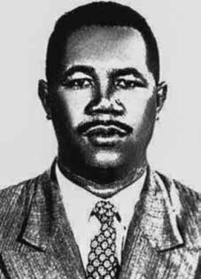

Dilermano
Mello
do Nascimento
CIRCUNSTÂNCIAS DA MORTE
Dilermano Mello do Nascimento morreu no dia 15 de agosto de 1964 na antiga sede Ministério da Justiça, na cidade do Rio de Janeiro. Preso na quarta-feira, dia 12 de agosto de 1964, Dilermano foi mantido nas dependências do Ministério da Justiça, onde ficava à disposição dos encarregados dos inquéritos. Segundo a versão oficial, no intervalo dos interrogatórios a que estava sendo submetido, Dilermano teria se matado, jogando-se de uma janela do 4º andar do prédio do Ministério da Justiça e vindo a cair no pátio interno do edifício, com morte instantânea. Dilermano morreu no sábado, dia 15 de agosto. O Registro de Ocorrência menciona que, junto ao corpo , foi encontrado, entre outros documentos e pertences, um bilhete com a data do ocorrido e a frase “Basta de tortura mental e desmoralização”. No mesmo dia, às 13h20, o corpo de Dilermano Mello do Nascimento deu entrada no Instituto Médico-Legal (IML) do Rio de Janeiro (RJ) pela Guia nº 29 do 3º Distrito Policial. Nesse documento, assinado, ao que tudo indica, pelo comissário Hélio Mascarenhas, i já constava o registro das circunstâncias da morte: “suicidou-se atirandose do 4º andar do edifício do M. Justiça”. A necrópsia ocorreu às 16 horas. O auto de exame cadavérico foi realizado pelos médicos peritos Cyriaco Bernardino Pereira de Almeida Brandão e Mário Martins Rodrigues. Os legistas apontaram “esmagamento do crânio” como causa da morte, sem entrar em detalhes sobre a forma como o óbito teria ocorrido. Registraram apenas que a análise desse quesito estava prejudicada. Um último ponto digno de nota nesse laudo é a estranhíssima indicação, no campo Inspeção Externa, de que “o cadáver é o de um homem de cor branca”. Esse dado vai de encontro ao fato de que Dilermano era negro e contrapõe-se à própria identificação preliminar do corpo, quando de seu recebimento pelo IML. Na ocasião, foi registrado que o cadáver era de um homem de cor parda. A perícia técnica do local ficou sob a responsabilidade do perito do Instituto de Criminalística, Cosme Sá Antunes. Embora a CNV tenha envidado esforços no sentido de recuperar esse documento junto ao Setor de Microfilmagem da Polícia Civil do Rio de Janeiro, não obteve sucesso. As informações de que dispomos sobre o conteúdo desse importante documento foram obtidas graças à cobertura da imprensa à época. Em matéria especial sobre o caso, o jornal Última Hora detalhou os principais resultados da perícia. Em seu laudo, Sá Antunes teria concluído, por exclusão de provas, que Dilermano foi induzido ao suicídio. As razões levantadas como fundamento desse entendimento são: 1) não foram encontradas marcas no parapeito da janela de onde saltou a vítima, o que não ocorre em casos de suicídio puro e simples; 2) o impulso inicial do corpo não foi idêntico à linha reta com ponto de partida da janela, de onde ocorreu o salto; 3) o suicida, de cima da janela, escolheu o local para pular; 4) saltou para a direita, modificando a continuidade do impulso inicial, caindo para a direita e não para a frente; porque, se tal ocorresse, o corpo teria batido em cima da sobreloja, no entanto, caiu à direita da marquise da sobreloja. ii O perito ainda estranhava que, em tão pouco tempo, nos instantes que mediaram a ação para se desvencilhar dos guardas e o suposto suicídio, Dilermano houvesse: a) fechado a porta; b) aberto a janela; c) escrito o bilhete com o texto “basta de tortura mental e desmoralização”; d) dobrado o bilhete e guardado no bolso; e) guardado a caneta no bolso; f) subido a janela, olhada para baixo e escolhido o local onde deveria cair (ele o fez, segundo a perícia); g) pulado para a morte. iii A viúva, Natália de Oliveira Nascimento, declarou ao jornal Diário de Notícias, ter sofrido, na ocasião, uma série de pressões, sobretudo da parte do comandante Correia Pinto, que estivera em sua residência, com outro oficial”. Afirmou ainda que “as autoridades responsáveis pelos inquéritos fizeram pressões para que ela assinasse uma declaração, admitindo o suicídio do marido. iv Em testemunho prestado à Comissão Nacional da Verdade (CNV), José Thadeu Melo do Nascimento, filho de Dilermano, confirmou que desde o dia 12 de agosto seu pai esteve detido nas dependências do Ministério da Justiça. Relatou ainda que agentes à paisana dos órgãos de segurança e repressão foram à sua residência à noite, na véspera da morte de seu pai, convidando ele e sua mãe a comparecerem ao Ministério da Justiça, onde v o capitão de mar e guerra Corrêa Pinto não lhes permitiu ver o ente querido e ainda os ameaçou, dizendo que: “seu pai não sairia vivo, se não confessasse e a família pagaria, caso o pai não confessasse”. Essas ameaças, a seu sentir, foram dirigidas a seu pai, que deveria estar ouvindo a conversa e ciente da presença dos familiares no local. Por fim, afirmou que, já bem tarde, provavelmente de madrugada, foram deixados em local distante de sua casa, tendo que retornar a pé. No dia seguinte, a família foi avisada da morte do ente querido. O corpo de Dilermano foi retirado do IML do Rio de Janeiro por Paulo Mello do Nascimento, irmão da vítima. Jorge Thadeu conta que também esteve presente no momento da retirada do corpo, acompanhado de um policial civil, amigo de seu pai. O sepultamento foi realizado pela família no cemitério São João Batista.
Dilermano Mello do Nascimento died on August 15, 1964 at the former headquarters of the Ministry of Justice, in the city of Rio de Janeiro. Arrested on Wednesday, August 12, 1964, Dilermano was kept on the premises of the Ministry of Justice, where he was at the disposal of those in charge of investigations. According to the official version, during the interval between the interrogations he was being subjected to, Dilermano allegedly killed himself, throwing himself from a window on the 4th floor of the Ministry of Justice building and falling into the building's inner courtyard, killing him instantly. Dilermano died on Saturday, August 15th. The Occurrence Record mentions that, among other documents and belongings, a note was found next to the body with the date of the incident and the phrase “Enough of the mental torture and demoralization”. On the same day, at 1:20 pm, the body of Dilermano Mello do Nascimento was admitted to the Instituto Médico-Legal (IML) of Rio de Janeiro (RJ) by Guide nº 29 of the 3rd Police District. In this document, signed, apparently, by Commissioner Hélio Mascarenhas, there was already a record of the circumstances of his death: “he committed suicide by throwing himself from the 4th floor of the M. Justiça building”. The necropsy took place at 4 pm. The cadaveric examination report was carried out by medical experts Cyriaco Bernardino Pereira de Almeida Brandão and Mário Martins Rodrigues. The coroners pointed to “crushing of the skull” as the cause of death, without going into details about how the death would have occurred. They only noted that the analysis of this item was impaired. A final point worth noting in this report is the very strange indication, in the External Inspection field, that “the corpse is that of a white man”. This data goes against the fact that Dilermano was black and contradicts the preliminary identification of the body when it was received by the IML. At the time, it was recorded that the corpse was that of a brown man. The technical expertise of the site was under the responsibility of the expert from the Criminalistics Institute, Cosme Sá Antunes. Although the CNV made efforts to recover this document from the Microfilming Sector of the Civil Police of Rio de Janeiro, it was unsuccessful. The information we have about the content of this important document was obtained thanks to press coverage at the time. In a special article about the case, the newspaper Última Hora detailed the main results of the investigation. In his report, Sá Antunes would have concluded, due to the exclusion of evidence, that Dilermano was induced to commit suicide. The reasons raised as the basis for this understanding are: 1) no marks were found on the window sill from which the victim jumped, which does not occur in cases of pure and simple suicide; 2) the initial impulse of the body was not identical to the straight line starting from the window, from where the jump occurred; 3) the suicide bomber, from above the window, chose the place to jump; 4) jumped to the right, changing the continuity of the initial impulse, falling to the right and not forward; because, if that had happened, the body would have hit the upper storey, however, it fell to the right of the upper storey awning. ii The expert was still surprised that, in such a short time, in the moments that mediated the action to free himself from the guards and the supposed suicide, Dilermano had: a) closed the door; b) open the window; c) written the note with the text “enough of mental torture and demoralization”; d) folded the ticket and kept it in the pocket; e) keep the pen in your pocket; f) climbed the window, looked down and chose the place where he should fall (he did so, according to experts); g) jumped to his death. iii The widow, Natália de Oliveira Nascimento, told the newspaper Diário de Notícias that she had suffered, at the time, a series of pressures, especially from Commander Correia Pinto, who had been at her residence, with another officer”. She further stated that "the authorities responsible for the investigations pressured her to sign a statement, admitting her husband's suicide. iv In testimony given to the National Truth Commission (CNV), José Thadeu Melo do Nascimento, Dilermano's son, confirmed that since August 12th his father had been detained on the premises of the Ministry of Justice. He also reported that undercover agents from the security and repression bodies went to his residence at night, the day before his father's death, inviting him and his mother to appear at the Ministry of Justice, where sea and war captain Corrêa Pinto did not allow them to see their loved one and even threatened them, saying that: “your father would not come out alive if he did not confess and the family would pay if the father did not confess”. These threats, in his opinion, were directed at his father, who should have been listening to the conversation and aware of the presence of family members at the scene. home, having to return on foot. The next day, the family was informed of the death of their loved one. Dilermano's body was taken from the IML in Rio de Janeiro by Paulo Mello do Nascimento, the victim's brother.
Dilermano Mello do Nascimento falleció el 15 de agosto de 1964 en la antigua sede del Ministerio de Justicia, en la ciudad de Río de Janeiro. Detenido el miércoles 12 de agosto de 1964, Dilermano permaneció recluido en las instalaciones del Ministerio de Justicia, donde quedó a disposición de los encargados de las investigaciones. Según la versión oficial, durante el intervalo entre los interrogatorios a los que era sometido, Dilermano presuntamente se suicidó, arrojándose desde una ventana del cuarto piso del edificio del Ministerio de Justicia y cayendo al patio interior del edificio, matando instantáneamente. Dilermano falleció el sábado 15 de agosto. El Acta de Sucesos menciona que, entre otros documentos y pertenencias, se encontró una nota junto al cuerpo con la fecha del hecho y la frase “Basta de tortura mental y desmoralización”. El mismo día, a las 13:20 horas, el cuerpo de Dilermano Mello do Nascimento fue ingresado en el Instituto Médico-Legal (IML) de Río de Janeiro (RJ) por la Guía nº 29 del 3º Distrito Policial. En ese documento, firmado aparentemente por el comisario Hélio Mascarenhas, ya quedaba constancia de las circunstancias de su muerte: “se suicidó arrojándose desde el 4º piso del edificio M. Justiça”. La necropsia se realizó a las 4 de la tarde. El informe del examen cadavérico fue realizado por los peritos médicos Cyriaco Bernardino Pereira de Almeida Brandão y Mário Martins Rodrigues. Los forenses señalaron como causa de la muerte “aplastamiento del cráneo”, sin entrar en detalles sobre cómo se habría producido el fallecimiento. Sólo señalaron que el análisis de este ítem estaba perjudicado. Un último punto que vale la pena señalar en este informe es la muy extraña indicación, en el campo de Inspección Externa, de que “el cadáver es el de un hombre blanco”. Este dato va en contra de que Dilermano era negro y contradice la identificación preliminar del cuerpo cuando fue recibido por el IML. En su momento se registró que el cadáver era el de un hombre moreno. La pericia técnica del sitio estuvo a cargo del perito del Instituto de Criminalística, Cosme Sá Antunes. Aunque la CNV hizo esfuerzos para recuperar este documento del Sector de Microfilmación de la Policía Civil de Río de Janeiro, no tuvo éxito. La información que tenemos sobre el contenido de este importante documento fue obtenida gracias a la cobertura periodística de la época. En un artículo especial sobre el caso, el diario Última Hora detalló los principales resultados de la investigación. En su informe, Sá Antunes habría concluido, por exclusión de pruebas, que Dilermano fue inducido al suicidio. Las razones esgrimidas como base para este entendimiento son: 1) no se encontraron marcas en el alféizar de la ventana desde donde saltó la víctima, lo que no ocurre en los casos de suicidio puro y simple; 2) el impulso inicial del cuerpo no era idéntico a la línea recta que partía de la ventana desde donde se produjo el salto; 3) el atacante suicida, desde arriba de la ventana, eligió el lugar para saltar; 4) saltó hacia la derecha, cambiando la continuidad del impulso inicial, cayendo hacia la derecha y no hacia adelante; pues de haber sucedido eso, el cuerpo habría impactado contra el piso superior, sin embargo, cayó hacia la derecha del toldo del piso superior. ii El perito aún estaba sorprendido de que, en tan poco tiempo, en los momentos que mediaron la acción para liberarse de los guardias y el supuesto suicidio, Dilermano hubiera: a) cerrado la puerta; b) abrir la ventana; c) redactó la nota con el texto “basta de tortura mental y desmoralización”; d) dobló el billete y lo guardó en el bolsillo; e) guardar el bolígrafo en el bolsillo; f) subió a la ventana, miró hacia abajo y eligió el lugar donde debía caer (así lo hizo, según los expertos); g) saltó a la muerte. iii La viuda, Natália de Oliveira Nascimento, dijo al Diário de Notícias que había sufrido, en ese momento, una serie de presiones, especialmente por parte del comandante Correia Pinto, que se encontraba en su residencia, con otro oficial”. Dijo además que "las autoridades responsables de las investigaciones la presionaron para que firmara una declaración admitiendo el suicidio de su marido. iv En testimonio rendido ante la Comisión Nacional de la Verdad (CNV), José Thadeu Melo do Nascimento, hijo de Dilermano, confirmó que desde el 12 de agosto su padre se encontraba detenido en las instalaciones del Ministerio de Justicia. También denunció que agentes encubiertos de los cuerpos de seguridad y represión acudieron a su residencia en la noche, el día antes de la muerte de su padre, invitándolo y su madre se presentó en el Ministerio de Justicia, donde el capitán de navío y de guerra Corrêa Pinto no les permitió ver a su ser querido e incluso los amenazó, diciendo que: “su padre no saldría con vida si no confesaba y la familia pagaría si el padre no confesaba”. Estas amenazas, en su opinión, estaban dirigidas a su padre, quien debería haber estado escuchando la conversación y consciente de la presencia de los familiares en el lugar de su casa, debiendo regresar a pie. uno de ellos fue sacado del IML de Río de Janeiro por Paulo Mello do Nascimento, hermano de la víctima.